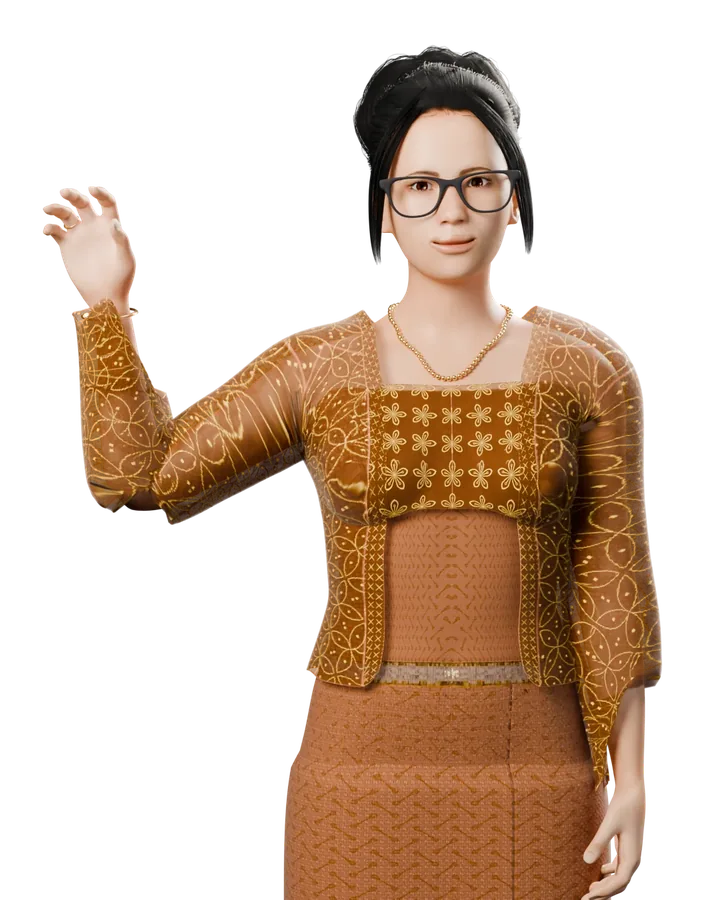

Sesuai lawan bicara
Bicara dengan simbah, guru, penjual, atau teman? Tuturloka menunjukkan ragam yang pas: ngoko, krama, atau krama inggil.
Bahasa Jawa & Sunda · bersama Bu Sari
Latih unggah-ungguh Jawa dan undak-usuk Sunda lewat obrolan dengan Bu Sari. Kamu jadi tahu kapan bilang mangan, nedha, atau dhahar, dan kenapa.
Bisa langsung dicoba sebagai tamu, tanpa akun.
Kenapa Tuturloka
Kamus dan penerjemah memberi arti kata. Tuturloka melatih keputusan yang lebih sulit: kata mana yang pas untuk siapa.
Bicara dengan simbah, guru, penjual, atau teman? Tuturloka menunjukkan ragam yang pas: ngoko, krama, atau krama inggil.
Berlatih dulu bersama Bu Sari sebelum bicara dengan orang sungguhan. Kalau keliru, Bu Sari menandai kata yang perlu diubah.
Kenapa dhahar tidak dipakai untuk diri sendiri? Penjelasannya singkat, jelas, dan langsung di kalimat yang kamu ucapkan.
Kalimat Jawa dan Sunda diambil dari kamus Tuturloka, bukan dikarang bebas oleh AI. Setiap entri baru terbit setelah diperiksa validator bahasa.

Kenalan dengan tutormu
Bu Sari adalah tutor 3D Tuturloka. Ia memerankan lawan bicaramu, mendengarkan jawabanmu, lalu memberi tahu kata yang perlu diubah beserta alasannya.
Hari ini Bu Sari bisa menjadi…
Cara kerja
Satu pelajaran berisi satu situasi nyata. Selesai dalam beberapa menit, bisa diulang kapan saja.
Mulai dari situasi sehari-hari: sowan ke rumah Simbah, matur ke Bu Guru, atau tumbas sayur di pasar.
Kalimat ngoko kamu ubah ke ragam yang sopan. Pelan-pelan, satu kata kunci setiap kali.
Bu Sari memerankan lawan bicaramu. Kamu menjawab dengan suara atau ketikan, dan obrolannya berlanjut seperti percakapan sungguhan.
Setelah obrolan, rapor bicara menunjukkan kalimat yang sudah pas, kata yang perlu diubah, dan latihan berikutnya.
Coba 10 detik
Begini rasanya latihan di Tuturloka. Pilih bahasanya, lalu pilih kalimat yang paling sopan.
Kepada Simbah:
Contoh dari kamus Tuturloka yang sedang ditinjau validator bahasa.
Bahasa
Bahasa Jawa dan Sunda sama-sama punya tingkat tutur. Tuturloka melatih keduanya.
Unggah-ungguh: ngoko, krama, krama inggil
| mangan | ngoko, untuk teman |
|---|---|
| nedha | krama, untuk diri sendiri |
| dhahar | krama inggil, untuk orang yang dihormati |
Undak-usuk: loma dan lemes
| dahar | loma, untuk teman |
|---|---|
| neda | lemes, untuk diri sendiri |
| tuang | lemes, untuk orang yang dihormati |
Mulai hari ini
Unduh Tuturloka, pilih satu situasi, dan ngobrol dengan Bu Sari. Sedikit demi sedikit, yang penting rutin: alon-alon waton kelakon.
Dapatkan diGoogle PlayTanya jawab
Untuk siapa saja yang ingin bicara bahasa daerah dengan sopan: remaja yang ingin ngobrol dengan kakek-nenek, perantau yang rindu kampung halaman, atau kamu yang akan bertemu calon mertua.
Tidak. Semua petunjuk dan penjelasan memakai Bahasa Indonesia. Kamu mulai dari kalimat sederhana, dan arti setiap kalimat bisa dibuka kapan saja.
Kamus memberi arti kata. Tuturloka melatih pilihan kata yang pas untuk lawan bicara tertentu, lewat obrolan, latihan ubah kalimat, dan rapor yang menunjukkan kata yang perlu diubah.
Tidak dikirim ke server. Ucapanmu diubah menjadi teks di HP, lalu hanya teksnya yang dikirim untuk diperiksa.
Bahasa Jawa sudah bisa dipakai. Bahasa Sunda sedang disiapkan dan akan segera hadir.
Tidak. Kamu bisa berlatih sebagai tamu. Hubungkan akun Google kalau ingin membuka riwayat latihan di HP lain. Akun dan semua data latihannya bisa kamu hapus sendiri dari Pengaturan.